import sys
assert sys.version_info >= (3, 7)Chapter 3 – Classification
This notebook contains all the sample code and solutions to the exercises in chapter 3.
|
|

|
Setup
This project requires Python 3.7 or above:
It also requires Scikit-Learn ≥ 1.0.1:
from packaging import version
import sklearn
assert version.parse(sklearn.__version__) >= version.parse("1.0.1")Just like in the previous chapter, let’s define the default font sizes to make the figures prettier:
import matplotlib.pyplot as plt
plt.rc('font', size=14)
plt.rc('axes', labelsize=14, titlesize=14)
plt.rc('legend', fontsize=14)
plt.rc('xtick', labelsize=10)
plt.rc('ytick', labelsize=10)And let’s create the images/classification folder (if it doesn’t already exist), and define the save_fig() function which is used through this notebook to save the figures in high-res for the book:
from pathlib import Path
IMAGES_PATH = Path() / "images" / "classification"
IMAGES_PATH.mkdir(parents=True, exist_ok=True)
def save_fig(fig_id, tight_layout=True, fig_extension="png", resolution=300):
path = IMAGES_PATH / f"{fig_id}.{fig_extension}"
if tight_layout:
plt.tight_layout()
plt.savefig(path, format=fig_extension, dpi=resolution)MNIST
from sklearn.datasets import fetch_openml
mnist = fetch_openml('mnist_784', as_frame=False)# extra code – it's a bit too long
print(mnist.DESCR)**Author**: Yann LeCun, Corinna Cortes, Christopher J.C. Burges
**Source**: [MNIST Website](http://yann.lecun.com/exdb/mnist/) - Date unknown
**Please cite**:
The MNIST database of handwritten digits with 784 features, raw data available at: http://yann.lecun.com/exdb/mnist/. It can be split in a training set of the first 60,000 examples, and a test set of 10,000 examples
It is a subset of a larger set available from NIST. The digits have been size-normalized and centered in a fixed-size image. It is a good database for people who want to try learning techniques and pattern recognition methods on real-world data while spending minimal efforts on preprocessing and formatting. The original black and white (bilevel) images from NIST were size normalized to fit in a 20x20 pixel box while preserving their aspect ratio. The resulting images contain grey levels as a result of the anti-aliasing technique used by the normalization algorithm. the images were centered in a 28x28 image by computing the center of mass of the pixels, and translating the image so as to position this point at the center of the 28x28 field.
With some classification methods (particularly template-based methods, such as SVM and K-nearest neighbors), the error rate improves when the digits are centered by bounding box rather than center of mass. If you do this kind of pre-processing, you should report it in your publications. The MNIST database was constructed from NIST's NIST originally designated SD-3 as their training set and SD-1 as their test set. However, SD-3 is much cleaner and easier to recognize than SD-1. The reason for this can be found on the fact that SD-3 was collected among Census Bureau employees, while SD-1 was collected among high-school students. Drawing sensible conclusions from learning experiments requires that the result be independent of the choice of training set and test among the complete set of samples. Therefore it was necessary to build a new database by mixing NIST's datasets.
The MNIST training set is composed of 30,000 patterns from SD-3 and 30,000 patterns from SD-1. Our test set was composed of 5,000 patterns from SD-3 and 5,000 patterns from SD-1. The 60,000 pattern training set contained examples from approximately 250 writers. We made sure that the sets of writers of the training set and test set were disjoint. SD-1 contains 58,527 digit images written by 500 different writers. In contrast to SD-3, where blocks of data from each writer appeared in sequence, the data in SD-1 is scrambled. Writer identities for SD-1 is available and we used this information to unscramble the writers. We then split SD-1 in two: characters written by the first 250 writers went into our new training set. The remaining 250 writers were placed in our test set. Thus we had two sets with nearly 30,000 examples each. The new training set was completed with enough examples from SD-3, starting at pattern # 0, to make a full set of 60,000 training patterns. Similarly, the new test set was completed with SD-3 examples starting at pattern # 35,000 to make a full set with 60,000 test patterns. Only a subset of 10,000 test images (5,000 from SD-1 and 5,000 from SD-3) is available on this site. The full 60,000 sample training set is available.
Downloaded from openml.org.mnist.keys() # extra code – we only use data and target in this notebookdict_keys(['data', 'target', 'frame', 'categories', 'feature_names', 'target_names', 'DESCR', 'details', 'url'])X, y = mnist.data, mnist.target
Xarray([[0., 0., 0., ..., 0., 0., 0.],
[0., 0., 0., ..., 0., 0., 0.],
[0., 0., 0., ..., 0., 0., 0.],
...,
[0., 0., 0., ..., 0., 0., 0.],
[0., 0., 0., ..., 0., 0., 0.],
[0., 0., 0., ..., 0., 0., 0.]])X.shape(70000, 784)yarray(['5', '0', '4', ..., '4', '5', '6'], dtype=object)y.shape(70000,)28 * 28784import matplotlib.pyplot as plt
def plot_digit(image_data):
image = image_data.reshape(28, 28)
plt.imshow(image, cmap="binary")
plt.axis("off")
some_digit = X[0]
plot_digit(some_digit)
save_fig("some_digit_plot") # extra code
plt.show()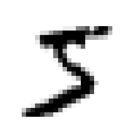
y[0]'5'# extra code – this cell generates and saves Figure 3–2
plt.figure(figsize=(9, 9))
for idx, image_data in enumerate(X[:100]):
plt.subplot(10, 10, idx + 1)
plot_digit(image_data)
plt.subplots_adjust(wspace=0, hspace=0)
save_fig("more_digits_plot", tight_layout=False)
plt.show()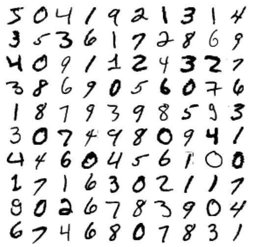
X_train, X_test, y_train, y_test = X[:60000], X[60000:], y[:60000], y[60000:]Training a Binary Classifier
y_train_5 = (y_train == '5') # True for all 5s, False for all other digits
y_test_5 = (y_test == '5')from sklearn.linear_model import SGDClassifier
sgd_clf = SGDClassifier(random_state=42)
sgd_clf.fit(X_train, y_train_5)SGDClassifier(random_state=42)sgd_clf.predict([some_digit])array([ True])Performance Measures
Measuring Accuracy Using Cross-Validation
from sklearn.model_selection import cross_val_score
cross_val_score(sgd_clf, X_train, y_train_5, cv=3, scoring="accuracy")array([0.95035, 0.96035, 0.9604 ])from sklearn.model_selection import StratifiedKFold
from sklearn.base import clone
skfolds = StratifiedKFold(n_splits=3) # add shuffle=True if the dataset is not
# already shuffled
for train_index, test_index in skfolds.split(X_train, y_train_5):
clone_clf = clone(sgd_clf)
X_train_folds = X_train[train_index]
y_train_folds = y_train_5[train_index]
X_test_fold = X_train[test_index]
y_test_fold = y_train_5[test_index]
clone_clf.fit(X_train_folds, y_train_folds)
y_pred = clone_clf.predict(X_test_fold)
n_correct = sum(y_pred == y_test_fold)
print(n_correct / len(y_pred))0.95035
0.96035
0.9604from sklearn.dummy import DummyClassifier
dummy_clf = DummyClassifier()
dummy_clf.fit(X_train, y_train_5)
print(any(dummy_clf.predict(X_train)))Falsecross_val_score(dummy_clf, X_train, y_train_5, cv=3, scoring="accuracy")array([0.90965, 0.90965, 0.90965])Confusion Matrix
from sklearn.model_selection import cross_val_predict
y_train_pred = cross_val_predict(sgd_clf, X_train, y_train_5, cv=3)from sklearn.metrics import confusion_matrix
cm = confusion_matrix(y_train_5, y_train_pred)
cmarray([[53892, 687],
[ 1891, 3530]])y_train_perfect_predictions = y_train_5 # pretend we reached perfection
confusion_matrix(y_train_5, y_train_perfect_predictions)array([[54579, 0],
[ 0, 5421]])Precision and Recall
from sklearn.metrics import precision_score, recall_score
precision_score(y_train_5, y_train_pred) # == 3530 / (687 + 3530)0.8370879772350012# extra code – this cell also computes the precision: TP / (FP + TP)
cm[1, 1] / (cm[0, 1] + cm[1, 1])0.8370879772350012recall_score(y_train_5, y_train_pred) # == 3530 / (1891 + 3530)0.6511713705958311# extra code – this cell also computes the recall: TP / (FN + TP)
cm[1, 1] / (cm[1, 0] + cm[1, 1])0.6511713705958311from sklearn.metrics import f1_score
f1_score(y_train_5, y_train_pred)0.7325171197343846# extra code – this cell also computes the f1 score
cm[1, 1] / (cm[1, 1] + (cm[1, 0] + cm[0, 1]) / 2)0.7325171197343847Precision/Recall Trade-off
y_scores = sgd_clf.decision_function([some_digit])
y_scoresarray([2164.22030239])threshold = 0
y_some_digit_pred = (y_scores > threshold)y_some_digit_predarray([ True])# extra code – just shows that y_scores > 0 produces the same result as
# calling predict()
y_scores > 0array([ True])threshold = 3000
y_some_digit_pred = (y_scores > threshold)
y_some_digit_predarray([False])y_scores = cross_val_predict(sgd_clf, X_train, y_train_5, cv=3,
method="decision_function")from sklearn.metrics import precision_recall_curve
precisions, recalls, thresholds = precision_recall_curve(y_train_5, y_scores)plt.figure(figsize=(8, 4)) # extra code – it's not needed, just formatting
plt.plot(thresholds, precisions[:-1], "b--", label="Precision", linewidth=2)
plt.plot(thresholds, recalls[:-1], "g-", label="Recall", linewidth=2)
plt.vlines(threshold, 0, 1.0, "k", "dotted", label="threshold")
# extra code – this section just beautifies and saves Figure 3–5
idx = (thresholds >= threshold).argmax() # first index ≥ threshold
plt.plot(thresholds[idx], precisions[idx], "bo")
plt.plot(thresholds[idx], recalls[idx], "go")
plt.axis([-50000, 50000, 0, 1])
plt.grid()
plt.xlabel("Threshold")
plt.legend(loc="center right")
save_fig("precision_recall_vs_threshold_plot")
plt.show()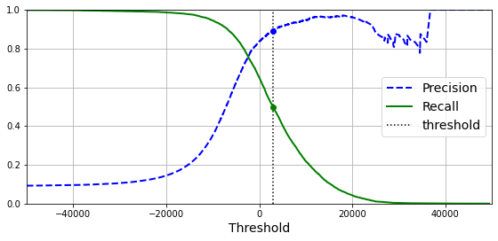
import matplotlib.patches as patches # extra code – for the curved arrow
plt.figure(figsize=(6, 5)) # extra code – not needed, just formatting
plt.plot(recalls, precisions, linewidth=2, label="Precision/Recall curve")
# extra code – just beautifies and saves Figure 3–6
plt.plot([recalls[idx], recalls[idx]], [0., precisions[idx]], "k:")
plt.plot([0.0, recalls[idx]], [precisions[idx], precisions[idx]], "k:")
plt.plot([recalls[idx]], [precisions[idx]], "ko",
label="Point at threshold 3,000")
plt.gca().add_patch(patches.FancyArrowPatch(
(0.79, 0.60), (0.61, 0.78),
connectionstyle="arc3,rad=.2",
arrowstyle="Simple, tail_width=1.5, head_width=8, head_length=10",
color="#444444"))
plt.text(0.56, 0.62, "Higher\nthreshold", color="#333333")
plt.xlabel("Recall")
plt.ylabel("Precision")
plt.axis([0, 1, 0, 1])
plt.grid()
plt.legend(loc="lower left")
save_fig("precision_vs_recall_plot")
plt.show()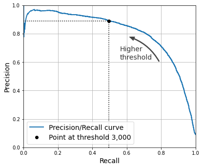
idx_for_90_precision = (precisions >= 0.90).argmax()
threshold_for_90_precision = thresholds[idx_for_90_precision]
threshold_for_90_precision3370.0194991439557y_train_pred_90 = (y_scores >= threshold_for_90_precision)precision_score(y_train_5, y_train_pred_90)0.9000345901072293recall_at_90_precision = recall_score(y_train_5, y_train_pred_90)
recall_at_90_precision0.4799852425751706The ROC Curve
from sklearn.metrics import roc_curve
fpr, tpr, thresholds = roc_curve(y_train_5, y_scores)idx_for_threshold_at_90 = (thresholds <= threshold_for_90_precision).argmax()
tpr_90, fpr_90 = tpr[idx_for_threshold_at_90], fpr[idx_for_threshold_at_90]
plt.figure(figsize=(6, 5)) # extra code – not needed, just formatting
plt.plot(fpr, tpr, linewidth=2, label="ROC curve")
plt.plot([0, 1], [0, 1], 'k:', label="Random classifier's ROC curve")
plt.plot([fpr_90], [tpr_90], "ko", label="Threshold for 90% precision")
# extra code – just beautifies and saves Figure 3–7
plt.gca().add_patch(patches.FancyArrowPatch(
(0.20, 0.89), (0.07, 0.70),
connectionstyle="arc3,rad=.4",
arrowstyle="Simple, tail_width=1.5, head_width=8, head_length=10",
color="#444444"))
plt.text(0.12, 0.71, "Higher\nthreshold", color="#333333")
plt.xlabel('False Positive Rate (Fall-Out)')
plt.ylabel('True Positive Rate (Recall)')
plt.grid()
plt.axis([0, 1, 0, 1])
plt.legend(loc="lower right", fontsize=13)
save_fig("roc_curve_plot")
plt.show()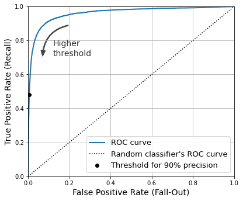
from sklearn.metrics import roc_auc_score
roc_auc_score(y_train_5, y_scores)0.9604938554008616Warning: the following cell may take a few minutes to run.
from sklearn.ensemble import RandomForestClassifier
forest_clf = RandomForestClassifier(random_state=42)y_probas_forest = cross_val_predict(forest_clf, X_train, y_train_5, cv=3,
method="predict_proba")y_probas_forest[:2]array([[0.11, 0.89],
[0.99, 0.01]])These are estimated probabilities. Among the images that the model classified as positive with a probability between 50% and 60%, there are actually about 94% positive images:
# Not in the code
idx_50_to_60 = (y_probas_forest[:, 1] > 0.50) & (y_probas_forest[:, 1] < 0.60)
print(f"{(y_train_5[idx_50_to_60]).sum() / idx_50_to_60.sum():.1%}")94.0%y_scores_forest = y_probas_forest[:, 1]
precisions_forest, recalls_forest, thresholds_forest = precision_recall_curve(
y_train_5, y_scores_forest)plt.figure(figsize=(6, 5)) # extra code – not needed, just formatting
plt.plot(recalls_forest, precisions_forest, "b-", linewidth=2,
label="Random Forest")
plt.plot(recalls, precisions, "--", linewidth=2, label="SGD")
# extra code – just beautifies and saves Figure 3–8
plt.xlabel("Recall")
plt.ylabel("Precision")
plt.axis([0, 1, 0, 1])
plt.grid()
plt.legend(loc="lower left")
save_fig("pr_curve_comparison_plot")
plt.show()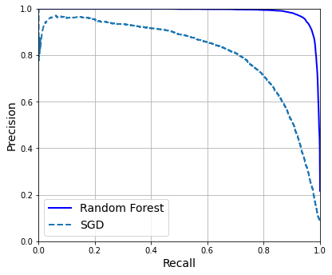
We could use cross_val_predict(forest_clf, X_train, y_train_5, cv=3) to compute y_train_pred_forest, but since we already have the estimated probabilities, we can just use the default threshold of 50% probability to get the same predictions much faster:
y_train_pred_forest = y_probas_forest[:, 1] >= 0.5 # positive proba ≥ 50%
f1_score(y_train_5, y_train_pred_forest)0.9274509803921569roc_auc_score(y_train_5, y_scores_forest)0.9983436731328145precision_score(y_train_5, y_train_pred_forest)0.9897468089558485recall_score(y_train_5, y_train_pred_forest)0.8725327430363402Multiclass Classification
SVMs do not scale well to large datasets, so let’s only train on the first 2,000 instances, or else this section will take a very long time to run:
from sklearn.svm import SVC
svm_clf = SVC(random_state=42)
svm_clf.fit(X_train[:2000], y_train[:2000]) # y_train, not y_train_5SVC(random_state=42)svm_clf.predict([some_digit])array(['5'], dtype=object)some_digit_scores = svm_clf.decision_function([some_digit])
some_digit_scores.round(2)array([[ 3.79, 0.73, 6.06, 8.3 , -0.29, 9.3 , 1.75, 2.77, 7.21,
4.82]])class_id = some_digit_scores.argmax()
class_id5svm_clf.classes_array(['0', '1', '2', '3', '4', '5', '6', '7', '8', '9'], dtype=object)svm_clf.classes_[class_id]'5'If you want decision_function() to return all 45 scores, you can set the decision_function_shape hyperparameter to "ovo". The default value is "ovr", but don’t let this confuse you: SVC always uses OvO for training. This hyperparameter only affects whether or not the 45 scores get aggregated or not:
# extra code – shows how to get all 45 OvO scores if needed
svm_clf.decision_function_shape = "ovo"
some_digit_scores_ovo = svm_clf.decision_function([some_digit])
some_digit_scores_ovo.round(2)array([[ 0.11, -0.21, -0.97, 0.51, -1.01, 0.19, 0.09, -0.31, -0.04,
-0.45, -1.28, 0.25, -1.01, -0.13, -0.32, -0.9 , -0.36, -0.93,
0.79, -1. , 0.45, 0.24, -0.24, 0.25, 1.54, -0.77, 1.11,
1.13, 1.04, 1.2 , -1.42, -0.53, -0.45, -0.99, -0.95, 1.21,
1. , 1. , 1.08, -0.02, -0.67, -0.14, -0.3 , -0.13, 0.25]])from sklearn.multiclass import OneVsRestClassifier
ovr_clf = OneVsRestClassifier(SVC(random_state=42))
ovr_clf.fit(X_train[:2000], y_train[:2000])OneVsRestClassifier(estimator=SVC(random_state=42))ovr_clf.predict([some_digit])array(['5'], dtype='<U1')len(ovr_clf.estimators_)10sgd_clf = SGDClassifier(random_state=42)
sgd_clf.fit(X_train, y_train)
sgd_clf.predict([some_digit])array(['3'], dtype='<U1')sgd_clf.decision_function([some_digit]).round()array([[-31893., -34420., -9531., 1824., -22320., -1386., -26189.,
-16148., -4604., -12051.]])Warning: the following two cells may take a few minutes each to run:
cross_val_score(sgd_clf, X_train, y_train, cv=3, scoring="accuracy")array([0.87365, 0.85835, 0.8689 ])from sklearn.preprocessing import StandardScaler
scaler = StandardScaler()
X_train_scaled = scaler.fit_transform(X_train.astype("float64"))
cross_val_score(sgd_clf, X_train_scaled, y_train, cv=3, scoring="accuracy")array([0.8983, 0.891 , 0.9018])Error Analysis
Warning: the following cell will take a few minutes to run:
from sklearn.metrics import ConfusionMatrixDisplay
y_train_pred = cross_val_predict(sgd_clf, X_train_scaled, y_train, cv=3)
plt.rc('font', size=9) # extra code – make the text smaller
ConfusionMatrixDisplay.from_predictions(y_train, y_train_pred)
plt.show()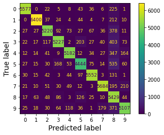
plt.rc('font', size=10) # extra code
ConfusionMatrixDisplay.from_predictions(y_train, y_train_pred,
normalize="true", values_format=".0%")
plt.show()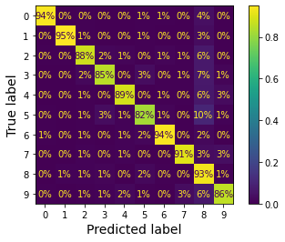
sample_weight = (y_train_pred != y_train)
plt.rc('font', size=10) # extra code
ConfusionMatrixDisplay.from_predictions(y_train, y_train_pred,
sample_weight=sample_weight,
normalize="true", values_format=".0%")
plt.show()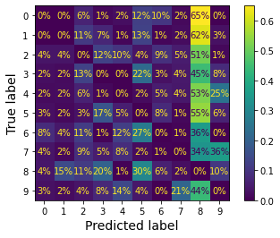
Let’s put all plots in a couple of figures for the book:
# extra code – this cell generates and saves Figure 3–9
fig, axs = plt.subplots(nrows=1, ncols=2, figsize=(9, 4))
plt.rc('font', size=9)
ConfusionMatrixDisplay.from_predictions(y_train, y_train_pred, ax=axs[0])
axs[0].set_title("Confusion matrix")
plt.rc('font', size=10)
ConfusionMatrixDisplay.from_predictions(y_train, y_train_pred, ax=axs[1],
normalize="true", values_format=".0%")
axs[1].set_title("CM normalized by row")
save_fig("confusion_matrix_plot_1")
plt.show()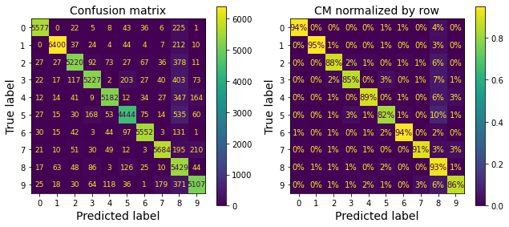
# extra code – this cell generates and saves Figure 3–10
fig, axs = plt.subplots(nrows=1, ncols=2, figsize=(9, 4))
plt.rc('font', size=10)
ConfusionMatrixDisplay.from_predictions(y_train, y_train_pred, ax=axs[0],
sample_weight=sample_weight,
normalize="true", values_format=".0%")
axs[0].set_title("Errors normalized by row")
ConfusionMatrixDisplay.from_predictions(y_train, y_train_pred, ax=axs[1],
sample_weight=sample_weight,
normalize="pred", values_format=".0%")
axs[1].set_title("Errors normalized by column")
save_fig("confusion_matrix_plot_2")
plt.show()
plt.rc('font', size=14) # make fonts great again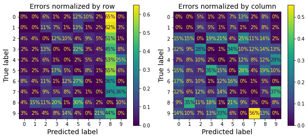
cl_a, cl_b = '3', '5'
X_aa = X_train[(y_train == cl_a) & (y_train_pred == cl_a)]
X_ab = X_train[(y_train == cl_a) & (y_train_pred == cl_b)]
X_ba = X_train[(y_train == cl_b) & (y_train_pred == cl_a)]
X_bb = X_train[(y_train == cl_b) & (y_train_pred == cl_b)]# extra code – this cell generates and saves Figure 3–11
size = 5
pad = 0.2
plt.figure(figsize=(size, size))
for images, (label_col, label_row) in [(X_ba, (0, 0)), (X_bb, (1, 0)),
(X_aa, (0, 1)), (X_ab, (1, 1))]:
for idx, image_data in enumerate(images[:size*size]):
x = idx % size + label_col * (size + pad)
y = idx // size + label_row * (size + pad)
plt.imshow(image_data.reshape(28, 28), cmap="binary",
extent=(x, x + 1, y, y + 1))
plt.xticks([size / 2, size + pad + size / 2], [str(cl_a), str(cl_b)])
plt.yticks([size / 2, size + pad + size / 2], [str(cl_b), str(cl_a)])
plt.plot([size + pad / 2, size + pad / 2], [0, 2 * size + pad], "k:")
plt.plot([0, 2 * size + pad], [size + pad / 2, size + pad / 2], "k:")
plt.axis([0, 2 * size + pad, 0, 2 * size + pad])
plt.xlabel("Predicted label")
plt.ylabel("True label")
save_fig("error_analysis_digits_plot")
plt.show()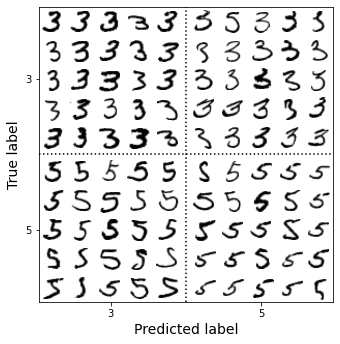
Note: there are several other ways you could code a plot like this one, but it’s a bit hard to get the axis labels right: * using nested GridSpecs * merging all the digits in each block into a single image (then using 2×2 subplots). For example: python X_aa[:25].reshape(5, 5, 28, 28).transpose(0, 2, 1, 3).reshape(5 * 28, 5 * 28) * using subfigures (since Matplotlib 3.4)
Multilabel Classification
import numpy as np
from sklearn.neighbors import KNeighborsClassifier
y_train_large = (y_train >= '7')
y_train_odd = (y_train.astype('int8') % 2 == 1)
y_multilabel = np.c_[y_train_large, y_train_odd]
knn_clf = KNeighborsClassifier()
knn_clf.fit(X_train, y_multilabel)KNeighborsClassifier()knn_clf.predict([some_digit])array([[False, True]])Warning: the following cell may take a few minutes to run:
y_train_knn_pred = cross_val_predict(knn_clf, X_train, y_multilabel, cv=3)
f1_score(y_multilabel, y_train_knn_pred, average="macro")0.976410265560605# extra code – shows that we get a negligible performance improvement when we
# set average="weighted" because the classes are already pretty
# well balanced.
f1_score(y_multilabel, y_train_knn_pred, average="weighted")0.9778357403921755from sklearn.multioutput import ClassifierChain
chain_clf = ClassifierChain(SVC(), cv=3, random_state=42)
chain_clf.fit(X_train[:2000], y_multilabel[:2000])ClassifierChain(base_estimator=SVC(), cv=3, random_state=42)chain_clf.predict([some_digit])array([[0., 1.]])Multioutput Classification
np.random.seed(42) # to make this code example reproducible
noise = np.random.randint(0, 100, (len(X_train), 784))
X_train_mod = X_train + noise
noise = np.random.randint(0, 100, (len(X_test), 784))
X_test_mod = X_test + noise
y_train_mod = X_train
y_test_mod = X_test# extra code – this cell generates and saves Figure 3–12
plt.subplot(121); plot_digit(X_test_mod[0])
plt.subplot(122); plot_digit(y_test_mod[0])
save_fig("noisy_digit_example_plot")
plt.show()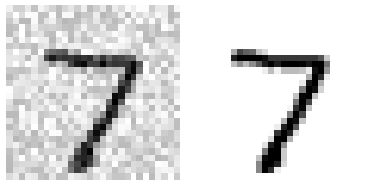
knn_clf = KNeighborsClassifier()
knn_clf.fit(X_train_mod, y_train_mod)
clean_digit = knn_clf.predict([X_test_mod[0]])
plot_digit(clean_digit)
save_fig("cleaned_digit_example_plot") # extra code – saves Figure 3–13
plt.show()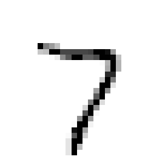
Exercise solutions
1. An MNIST Classifier With Over 97% Accuracy
Exercise: Try to build a classifier for the MNIST dataset that achieves over 97% accuracy on the test set. Hint: the KNeighborsClassifier works quite well for this task; you just need to find good hyperparameter values (try a grid search on the weights and n_neighbors hyperparameters).
Let’s start with a simple K-Nearest Neighbors classifier and measure its performance on the test set. This will be our baseline:
knn_clf = KNeighborsClassifier()
knn_clf.fit(X_train, y_train)
baseline_accuracy = knn_clf.score(X_test, y_test)
baseline_accuracy0.9688Great! A regular KNN classifier with the default hyperparameters is already very close to our goal.
Let’s see if tuning the hyperparameters can help. To speed up the search, let’s train only on the first 10,000 images:
from sklearn.model_selection import GridSearchCV
param_grid = [{'weights': ["uniform", "distance"], 'n_neighbors': [3, 4, 5, 6]}]
knn_clf = KNeighborsClassifier()
grid_search = GridSearchCV(knn_clf, param_grid, cv=5)
grid_search.fit(X_train[:10_000], y_train[:10_000])GridSearchCV(cv=5, estimator=KNeighborsClassifier(),
param_grid=[{'n_neighbors': [3, 4, 5, 6],
'weights': ['uniform', 'distance']}])grid_search.best_params_{'n_neighbors': 4, 'weights': 'distance'}grid_search.best_score_0.9441999999999998The score dropped, but that was expected since we only trained on 10,000 images. So let’s take the best model and train it again on the full training set:
grid_search.best_estimator_.fit(X_train, y_train)
tuned_accuracy = grid_search.score(X_test, y_test)
tuned_accuracy0.9714We reached our goal of 97% accuracy! 🥳
2. Data Augmentation
Exercise: Write a function that can shift an MNIST image in any direction (left, right, up, or down) by one pixel. You can use the shift() function from the scipy.ndimage module. For example, shift(image, [2, 1], cval=0) shifts the image two pixels down and one pixel to the right. Then, for each image in the training set, create four shifted copies (one per direction) and add them to the training set. Finally, train your best model on this expanded training set and measure its accuracy on the test set. You should observe that your model performs even better now! This technique of artificially growing the training set is called data augmentation or training set expansion.
Let’s try augmenting the MNIST dataset by adding slightly shifted versions of each image.
from scipy.ndimage import shiftdef shift_image(image, dx, dy):
image = image.reshape((28, 28))
shifted_image = shift(image, [dy, dx], cval=0, mode="constant")
return shifted_image.reshape([-1])Let’s see if it works:
image = X_train[1000] # some random digit to demo
shifted_image_down = shift_image(image, 0, 5)
shifted_image_left = shift_image(image, -5, 0)
plt.figure(figsize=(12, 3))
plt.subplot(131)
plt.title("Original")
plt.imshow(image.reshape(28, 28),
interpolation="nearest", cmap="Greys")
plt.subplot(132)
plt.title("Shifted down")
plt.imshow(shifted_image_down.reshape(28, 28),
interpolation="nearest", cmap="Greys")
plt.subplot(133)
plt.title("Shifted left")
plt.imshow(shifted_image_left.reshape(28, 28),
interpolation="nearest", cmap="Greys")
plt.show()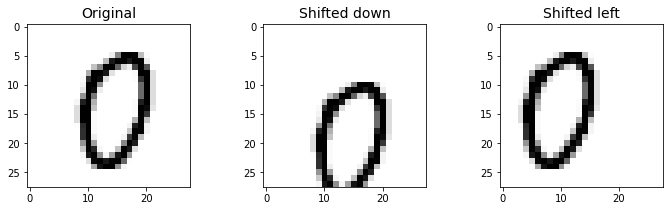
Looks good! Now let’s create an augmented training set by shifting every image left, right, up and down by one pixel:
X_train_augmented = [image for image in X_train]
y_train_augmented = [label for label in y_train]
for dx, dy in ((-1, 0), (1, 0), (0, 1), (0, -1)):
for image, label in zip(X_train, y_train):
X_train_augmented.append(shift_image(image, dx, dy))
y_train_augmented.append(label)
X_train_augmented = np.array(X_train_augmented)
y_train_augmented = np.array(y_train_augmented)Let’s shuffle the augmented training set, or else all shifted images will be grouped together:
shuffle_idx = np.random.permutation(len(X_train_augmented))
X_train_augmented = X_train_augmented[shuffle_idx]
y_train_augmented = y_train_augmented[shuffle_idx]Now let’s train the model using the best hyperparameters we found in the previous exercise:
knn_clf = KNeighborsClassifier(**grid_search.best_params_)knn_clf.fit(X_train_augmented, y_train_augmented)KNeighborsClassifier(n_neighbors=4, weights='distance')Warning: the following cell may take a few minutes to run:
augmented_accuracy = knn_clf.score(X_test, y_test)
augmented_accuracy0.9763By simply augmenting the data, we’ve got a 0.5% accuracy boost. Perhaps it does not sound so impressive, but it actually means that the error rate dropped significantly:
error_rate_change = (1 - augmented_accuracy) / (1 - tuned_accuracy) - 1
print(f"error_rate_change = {error_rate_change:.0%}")error_rate_change = -17%The error rate dropped quite a bit thanks to data augmentation.
3. Tackle the Titanic dataset
Exercise: Tackle the Titanic dataset. A great place to start is on Kaggle. Alternatively, you can download the data from https://homl.info/titanic.tgz and unzip this tarball like you did for the housing data in Chapter 2. This will give you two CSV files: train.csv and test.csv which you can load using pandas.read_csv(). The goal is to train a classifier that can predict the Survived column based on the other columns.
Let’s fetch the data and load it:
from pathlib import Path
import pandas as pd
import tarfile
import urllib.request
def load_titanic_data():
tarball_path = Path("datasets/titanic.tgz")
if not tarball_path.is_file():
Path("datasets").mkdir(parents=True, exist_ok=True)
url = "https://github.com/ageron/data/raw/main/titanic.tgz"
urllib.request.urlretrieve(url, tarball_path)
with tarfile.open(tarball_path) as titanic_tarball:
titanic_tarball.extractall(path="datasets")
return [pd.read_csv(Path("datasets/titanic") / filename)
for filename in ("train.csv", "test.csv")]train_data, test_data = load_titanic_data()The data is already split into a training set and a test set. However, the test data does not contain the labels: your goal is to train the best model you can on the training data, then make your predictions on the test data and upload them to Kaggle to see your final score.
Let’s take a peek at the top few rows of the training set:
train_data.head()| PassengerId | Survived | Pclass | Name | Sex | Age | SibSp | Parch | Ticket | Fare | Cabin | Embarked | |
|---|---|---|---|---|---|---|---|---|---|---|---|---|
| 0 | 1 | 0 | 3 | Braund, Mr. Owen Harris | male | 22.0 | 1 | 0 | A/5 21171 | 7.2500 | NaN | S |
| 1 | 2 | 1 | 1 | Cumings, Mrs. John Bradley (Florence Briggs Th... | female | 38.0 | 1 | 0 | PC 17599 | 71.2833 | C85 | C |
| 2 | 3 | 1 | 3 | Heikkinen, Miss. Laina | female | 26.0 | 0 | 0 | STON/O2. 3101282 | 7.9250 | NaN | S |
| 3 | 4 | 1 | 1 | Futrelle, Mrs. Jacques Heath (Lily May Peel) | female | 35.0 | 1 | 0 | 113803 | 53.1000 | C123 | S |
| 4 | 5 | 0 | 3 | Allen, Mr. William Henry | male | 35.0 | 0 | 0 | 373450 | 8.0500 | NaN | S |
The attributes have the following meaning: * PassengerId: a unique identifier for each passenger * Survived: that’s the target, 0 means the passenger did not survive, while 1 means he/she survived. * Pclass: passenger class. * Name, Sex, Age: self-explanatory * SibSp: how many siblings & spouses of the passenger aboard the Titanic. * Parch: how many children & parents of the passenger aboard the Titanic. * Ticket: ticket id * Fare: price paid (in pounds) * Cabin: passenger’s cabin number * Embarked: where the passenger embarked the Titanic
The goal is to predict whether or not a passenger survived based on attributes such as their age, sex, passenger class, where they embarked and so on.
Let’s explicitly set the PassengerId column as the index column:
train_data = train_data.set_index("PassengerId")
test_data = test_data.set_index("PassengerId")Let’s get more info to see how much data is missing:
train_data.info()<class 'pandas.core.frame.DataFrame'>
Int64Index: 891 entries, 1 to 891
Data columns (total 11 columns):
# Column Non-Null Count Dtype
--- ------ -------------- -----
0 Survived 891 non-null int64
1 Pclass 891 non-null int64
2 Name 891 non-null object
3 Sex 891 non-null object
4 Age 714 non-null float64
5 SibSp 891 non-null int64
6 Parch 891 non-null int64
7 Ticket 891 non-null object
8 Fare 891 non-null float64
9 Cabin 204 non-null object
10 Embarked 889 non-null object
dtypes: float64(2), int64(4), object(5)
memory usage: 83.5+ KBtrain_data[train_data["Sex"]=="female"]["Age"].median()27.0Okay, the Age, Cabin and Embarked attributes are sometimes null (less than 891 non-null), especially the Cabin (77% are null). We will ignore the Cabin for now and focus on the rest. The Age attribute has about 19% null values, so we will need to decide what to do with them. Replacing null values with the median age seems reasonable. We could be a bit smarter by predicting the age based on the other columns (for example, the median age is 37 in 1st class, 29 in 2nd class and 24 in 3rd class), but we’ll keep things simple and just use the overall median age.
The Name and Ticket attributes may have some value, but they will be a bit tricky to convert into useful numbers that a model can consume. So for now, we will ignore them.
Let’s take a look at the numerical attributes:
train_data.describe()| Survived | Pclass | Age | SibSp | Parch | Fare | |
|---|---|---|---|---|---|---|
| count | 891.000000 | 891.000000 | 714.000000 | 891.000000 | 891.000000 | 891.000000 |
| mean | 0.383838 | 2.308642 | 29.699113 | 0.523008 | 0.381594 | 32.204208 |
| std | 0.486592 | 0.836071 | 14.526507 | 1.102743 | 0.806057 | 49.693429 |
| min | 0.000000 | 1.000000 | 0.416700 | 0.000000 | 0.000000 | 0.000000 |
| 25% | 0.000000 | 2.000000 | 20.125000 | 0.000000 | 0.000000 | 7.910400 |
| 50% | 0.000000 | 3.000000 | 28.000000 | 0.000000 | 0.000000 | 14.454200 |
| 75% | 1.000000 | 3.000000 | 38.000000 | 1.000000 | 0.000000 | 31.000000 |
| max | 1.000000 | 3.000000 | 80.000000 | 8.000000 | 6.000000 | 512.329200 |
- Yikes, only 38% Survived! 😭 That’s close enough to 40%, so accuracy will be a reasonable metric to evaluate our model.
- The mean Fare was £32.20, which does not seem so expensive (but it was probably a lot of money back then).
- The mean Age was less than 30 years old.
Let’s check that the target is indeed 0 or 1:
train_data["Survived"].value_counts()0 549
1 342
Name: Survived, dtype: int64Now let’s take a quick look at all the categorical attributes:
train_data["Pclass"].value_counts()3 491
1 216
2 184
Name: Pclass, dtype: int64train_data["Sex"].value_counts()male 577
female 314
Name: Sex, dtype: int64train_data["Embarked"].value_counts()S 644
C 168
Q 77
Name: Embarked, dtype: int64The Embarked attribute tells us where the passenger embarked: C=Cherbourg, Q=Queenstown, S=Southampton.
Now let’s build our preprocessing pipelines, starting with the pipeline for numerical attributes:
from sklearn.pipeline import Pipeline
from sklearn.impute import SimpleImputer
num_pipeline = Pipeline([
("imputer", SimpleImputer(strategy="median")),
("scaler", StandardScaler())
])Now we can build the pipeline for the categorical attributes:
from sklearn.preprocessing import OrdinalEncoder, OneHotEncoderNote: the sparse hyperparameter below was renamed to sparse_output.
cat_pipeline = Pipeline([
("ordinal_encoder", OrdinalEncoder()),
("imputer", SimpleImputer(strategy="most_frequent")),
("cat_encoder", OneHotEncoder(sparse_output=False)),
])Finally, let’s join the numerical and categorical pipelines:
from sklearn.compose import ColumnTransformer
num_attribs = ["Age", "SibSp", "Parch", "Fare"]
cat_attribs = ["Pclass", "Sex", "Embarked"]
preprocess_pipeline = ColumnTransformer([
("num", num_pipeline, num_attribs),
("cat", cat_pipeline, cat_attribs),
])Cool! Now we have a nice preprocessing pipeline that takes the raw data and outputs numerical input features that we can feed to any Machine Learning model we want.
X_train = preprocess_pipeline.fit_transform(train_data)
X_trainarray([[-0.56573582, 0.43279337, -0.47367361, ..., 0. ,
0. , 1. ],
[ 0.6638609 , 0.43279337, -0.47367361, ..., 1. ,
0. , 0. ],
[-0.25833664, -0.4745452 , -0.47367361, ..., 0. ,
0. , 1. ],
...,
[-0.10463705, 0.43279337, 2.00893337, ..., 0. ,
0. , 1. ],
[-0.25833664, -0.4745452 , -0.47367361, ..., 1. ,
0. , 0. ],
[ 0.20276213, -0.4745452 , -0.47367361, ..., 0. ,
1. , 0. ]])Let’s not forget to get the labels:
y_train = train_data["Survived"]We are now ready to train a classifier. Let’s start with a RandomForestClassifier:
forest_clf = RandomForestClassifier(n_estimators=100, random_state=42)
forest_clf.fit(X_train, y_train)RandomForestClassifier(random_state=42)Great, our model is trained, let’s use it to make predictions on the test set:
X_test = preprocess_pipeline.transform(test_data)
y_pred = forest_clf.predict(X_test)And now we could just build a CSV file with these predictions (respecting the format expected by Kaggle), then upload it and hope for the best. But wait! We can do better than hope. Why don’t we use cross-validation to have an idea of how good our model is?
forest_scores = cross_val_score(forest_clf, X_train, y_train, cv=10)
forest_scores.mean()0.8137578027465668Okay, not too bad! Looking at the leaderboard for the Titanic competition on Kaggle, you can see that our score is in the top 2%, woohoo! Some Kagglers reached 100% accuracy, but since you can easily find the list of victims of the Titanic, it seems likely that there was little Machine Learning involved in their performance! 😆
Let’s try an SVC:
from sklearn.svm import SVC
svm_clf = SVC(gamma="auto")
svm_scores = cross_val_score(svm_clf, X_train, y_train, cv=10)
svm_scores.mean()0.8249313358302123Great! This model looks better.
But instead of just looking at the mean accuracy across the 10 cross-validation folds, let’s plot all 10 scores for each model, along with a box plot highlighting the lower and upper quartiles, and “whiskers” showing the extent of the scores (thanks to Nevin Yilmaz for suggesting this visualization). Note that the boxplot() function detects outliers (called “fliers”) and does not include them within the whiskers. Specifically, if the lower quartile is \(Q_1\) and the upper quartile is \(Q_3\), then the interquartile range \(IQR = Q_3 - Q_1\) (this is the box’s height), and any score lower than \(Q_1 - 1.5 \times IQR\) is a flier, and so is any score greater than \(Q3 + 1.5 \times IQR\).
plt.figure(figsize=(8, 4))
plt.plot([1]*10, svm_scores, ".")
plt.plot([2]*10, forest_scores, ".")
plt.boxplot([svm_scores, forest_scores], labels=("SVM", "Random Forest"))
plt.ylabel("Accuracy")
plt.show()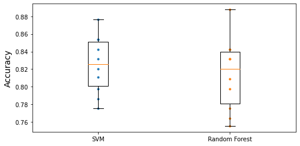
The random forest classifier got a very high score on one of the 10 folds, but overall it had a lower mean score, as well as a bigger spread, so it looks like the SVM classifier is more likely to generalize well.
To improve this result further, you could: * Compare many more models and tune hyperparameters using cross validation and grid search, * Do more feature engineering, for example: * Try to convert numerical attributes to categorical attributes: for example, different age groups had very different survival rates (see below), so it may help to create an age bucket category and use it instead of the age. Similarly, it may be useful to have a special category for people traveling alone since only 30% of them survived (see below). * Replace SibSp and Parch with their sum. * Try to identify parts of names that correlate well with the Survived attribute. * Use the Cabin column, for example take its first letter and treat it as a categorical attribute.
train_data["AgeBucket"] = train_data["Age"] // 15 * 15
train_data[["AgeBucket", "Survived"]].groupby(['AgeBucket']).mean()| Survived | |
|---|---|
| AgeBucket | |
| 0.0 | 0.576923 |
| 15.0 | 0.362745 |
| 30.0 | 0.423256 |
| 45.0 | 0.404494 |
| 60.0 | 0.240000 |
| 75.0 | 1.000000 |
train_data["RelativesOnboard"] = train_data["SibSp"] + train_data["Parch"]
train_data[["RelativesOnboard", "Survived"]].groupby(
['RelativesOnboard']).mean()| Survived | |
|---|---|
| RelativesOnboard | |
| 0 | 0.303538 |
| 1 | 0.552795 |
| 2 | 0.578431 |
| 3 | 0.724138 |
| 4 | 0.200000 |
| 5 | 0.136364 |
| 6 | 0.333333 |
| 7 | 0.000000 |
| 10 | 0.000000 |
4. Spam classifier
Exercise: Build a spam classifier (a more challenging exercise):
- Download examples of spam and ham from Apache SpamAssassin’s public datasets.
- Unzip the datasets and familiarize yourself with the data format.
- Split the datasets into a training set and a test set.
- Write a data preparation pipeline to convert each email into a feature vector. Your preparation pipeline should transform an email into a (sparse) vector that indicates the presence or absence of each possible word. For example, if all emails only ever contain four words, “Hello,” “how,” “are,” “you,” then the email “Hello you Hello Hello you” would be converted into a vector [1, 0, 0, 1] (meaning [“Hello” is present, “how” is absent, “are” is absent, “you” is present]), or [3, 0, 0, 2] if you prefer to count the number of occurrences of each word.
You may want to add hyperparameters to your preparation pipeline to control whether or not to strip off email headers, convert each email to lowercase, remove punctuation, replace all URLs with “URL,” replace all numbers with “NUMBER,” or even perform stemming (i.e., trim off word endings; there are Python libraries available to do this).
Finally, try out several classifiers and see if you can build a great spam classifier, with both high recall and high precision.
import tarfile
def fetch_spam_data():
spam_root = "http://spamassassin.apache.org/old/publiccorpus/"
ham_url = spam_root + "20030228_easy_ham.tar.bz2"
spam_url = spam_root + "20030228_spam.tar.bz2"
spam_path = Path() / "datasets" / "spam"
spam_path.mkdir(parents=True, exist_ok=True)
for dir_name, tar_name, url in (("easy_ham", "ham", ham_url),
("spam", "spam", spam_url)):
if not (spam_path / dir_name).is_dir():
path = (spam_path / tar_name).with_suffix(".tar.bz2")
print("Downloading", path)
urllib.request.urlretrieve(url, path)
tar_bz2_file = tarfile.open(path)
tar_bz2_file.extractall(path=spam_path)
tar_bz2_file.close()
return [spam_path / dir_name for dir_name in ("easy_ham", "spam")]ham_dir, spam_dir = fetch_spam_data()Next, let’s load all the emails:
ham_filenames = [f for f in sorted(ham_dir.iterdir()) if len(f.name) > 20]
spam_filenames = [f for f in sorted(spam_dir.iterdir()) if len(f.name) > 20]len(ham_filenames)2500len(spam_filenames)500We can use Python’s email module to parse these emails (this handles headers, encoding, and so on):
import email
import email.policy
def load_email(filepath):
with open(filepath, "rb") as f:
return email.parser.BytesParser(policy=email.policy.default).parse(f)ham_emails = [load_email(filepath) for filepath in ham_filenames]
spam_emails = [load_email(filepath) for filepath in spam_filenames]Let’s look at one example of ham and one example of spam, to get a feel of what the data looks like:
print(ham_emails[1].get_content().strip())Martin A posted:
Tassos Papadopoulos, the Greek sculptor behind the plan, judged that the
limestone of Mount Kerdylio, 70 miles east of Salonika and not far from the
Mount Athos monastic community, was ideal for the patriotic sculpture.
As well as Alexander's granite features, 240 ft high and 170 ft wide, a
museum, a restored amphitheatre and car park for admiring crowds are
planned
---------------------
So is this mountain limestone or granite?
If it's limestone, it'll weather pretty fast.
------------------------ Yahoo! Groups Sponsor ---------------------~-->
4 DVDs Free +s&p Join Now
http://us.click.yahoo.com/pt6YBB/NXiEAA/mG3HAA/7gSolB/TM
---------------------------------------------------------------------~->
To unsubscribe from this group, send an email to:
forteana-unsubscribe@egroups.com
Your use of Yahoo! Groups is subject to http://docs.yahoo.com/info/terms/print(spam_emails[6].get_content().strip())Help wanted. We are a 14 year old fortune 500 company, that is
growing at a tremendous rate. We are looking for individuals who
want to work from home.
This is an opportunity to make an excellent income. No experience
is required. We will train you.
So if you are looking to be employed from home with a career that has
vast opportunities, then go:
http://www.basetel.com/wealthnow
We are looking for energetic and self motivated people. If that is you
than click on the link and fill out the form, and one of our
employement specialist will contact you.
To be removed from our link simple go to:
http://www.basetel.com/remove.html
4139vOLW7-758DoDY1425FRhM1-764SMFc8513fCsLl40Some emails are actually multipart, with images and attachments (which can have their own attachments). Let’s look at the various types of structures we have:
def get_email_structure(email):
if isinstance(email, str):
return email
payload = email.get_payload()
if isinstance(payload, list):
multipart = ", ".join([get_email_structure(sub_email)
for sub_email in payload])
return f"multipart({multipart})"
else:
return email.get_content_type()from collections import Counter
def structures_counter(emails):
structures = Counter()
for email in emails:
structure = get_email_structure(email)
structures[structure] += 1
return structuresstructures_counter(ham_emails).most_common()[('text/plain', 2408),
('multipart(text/plain, application/pgp-signature)', 66),
('multipart(text/plain, text/html)', 8),
('multipart(text/plain, text/plain)', 4),
('multipart(text/plain)', 3),
('multipart(text/plain, application/octet-stream)', 2),
('multipart(text/plain, text/enriched)', 1),
('multipart(text/plain, application/ms-tnef, text/plain)', 1),
('multipart(multipart(text/plain, text/plain, text/plain), application/pgp-signature)',
1),
('multipart(text/plain, video/mng)', 1),
('multipart(text/plain, multipart(text/plain))', 1),
('multipart(text/plain, application/x-pkcs7-signature)', 1),
('multipart(text/plain, multipart(text/plain, text/plain), text/rfc822-headers)',
1),
('multipart(text/plain, multipart(text/plain, text/plain), multipart(multipart(text/plain, application/x-pkcs7-signature)))',
1),
('multipart(text/plain, application/x-java-applet)', 1)]structures_counter(spam_emails).most_common()[('text/plain', 218),
('text/html', 183),
('multipart(text/plain, text/html)', 45),
('multipart(text/html)', 20),
('multipart(text/plain)', 19),
('multipart(multipart(text/html))', 5),
('multipart(text/plain, image/jpeg)', 3),
('multipart(text/html, application/octet-stream)', 2),
('multipart(text/plain, application/octet-stream)', 1),
('multipart(text/html, text/plain)', 1),
('multipart(multipart(text/html), application/octet-stream, image/jpeg)', 1),
('multipart(multipart(text/plain, text/html), image/gif)', 1),
('multipart/alternative', 1)]It seems that the ham emails are more often plain text, while spam has quite a lot of HTML. Moreover, quite a few ham emails are signed using PGP, while no spam is. In short, it seems that the email structure is useful information to have.
Now let’s take a look at the email headers:
for header, value in spam_emails[0].items():
print(header, ":", value)Return-Path : <12a1mailbot1@web.de>
Delivered-To : zzzz@localhost.spamassassin.taint.org
Received : from localhost (localhost [127.0.0.1]) by phobos.labs.spamassassin.taint.org (Postfix) with ESMTP id 136B943C32 for <zzzz@localhost>; Thu, 22 Aug 2002 08:17:21 -0400 (EDT)
Received : from mail.webnote.net [193.120.211.219] by localhost with POP3 (fetchmail-5.9.0) for zzzz@localhost (single-drop); Thu, 22 Aug 2002 13:17:21 +0100 (IST)
Received : from dd_it7 ([210.97.77.167]) by webnote.net (8.9.3/8.9.3) with ESMTP id NAA04623 for <zzzz@spamassassin.taint.org>; Thu, 22 Aug 2002 13:09:41 +0100
From : 12a1mailbot1@web.de
Received : from r-smtp.korea.com - 203.122.2.197 by dd_it7 with Microsoft SMTPSVC(5.5.1775.675.6); Sat, 24 Aug 2002 09:42:10 +0900
To : dcek1a1@netsgo.com
Subject : Life Insurance - Why Pay More?
Date : Wed, 21 Aug 2002 20:31:57 -1600
MIME-Version : 1.0
Message-ID : <0103c1042001882DD_IT7@dd_it7>
Content-Type : text/html; charset="iso-8859-1"
Content-Transfer-Encoding : quoted-printableThere’s probably a lot of useful information in there, such as the sender’s email address (12a1mailbot1@web.de looks fishy), but we will just focus on the Subject header:
spam_emails[0]["Subject"]'Life Insurance - Why Pay More?'Okay, before we learn too much about the data, let’s not forget to split it into a training set and a test set:
import numpy as np
from sklearn.model_selection import train_test_split
X = np.array(ham_emails + spam_emails, dtype=object)
y = np.array([0] * len(ham_emails) + [1] * len(spam_emails))
X_train, X_test, y_train, y_test = train_test_split(X, y, test_size=0.2,
random_state=42)Okay, let’s start writing the preprocessing functions. First, we will need a function to convert HTML to plain text. Arguably the best way to do this would be to use the great BeautifulSoup library, but I would like to avoid adding another dependency to this project, so let’s hack a quick & dirty solution using regular expressions (at the risk of un̨ho͞ly radiańcé destro҉ying all enli̍̈́̂̈́ghtenment). The following function first drops the <head> section, then converts all <a> tags to the word HYPERLINK, then it gets rid of all HTML tags, leaving only the plain text. For readability, it also replaces multiple newlines with single newlines, and finally it unescapes html entities (such as > or ):
import re
from html import unescape
def html_to_plain_text(html):
text = re.sub('<head.*?>.*?</head>', '', html, flags=re.M | re.S | re.I)
text = re.sub('<a\s.*?>', ' HYPERLINK ', text, flags=re.M | re.S | re.I)
text = re.sub('<.*?>', '', text, flags=re.M | re.S)
text = re.sub(r'(\s*\n)+', '\n', text, flags=re.M | re.S)
return unescape(text)Let’s see if it works. This is HTML spam:
html_spam_emails = [email for email in X_train[y_train==1]
if get_email_structure(email) == "text/html"]
sample_html_spam = html_spam_emails[7]
print(sample_html_spam.get_content().strip()[:1000], "...")<HTML><HEAD><TITLE></TITLE><META http-equiv="Content-Type" content="text/html; charset=windows-1252"><STYLE>A:link {TEX-DECORATION: none}A:active {TEXT-DECORATION: none}A:visited {TEXT-DECORATION: none}A:hover {COLOR: #0033ff; TEXT-DECORATION: underline}</STYLE><META content="MSHTML 6.00.2713.1100" name="GENERATOR"></HEAD>
<BODY text="#000000" vLink="#0033ff" link="#0033ff" bgColor="#CCCC99"><TABLE borderColor="#660000" cellSpacing="0" cellPadding="0" border="0" width="100%"><TR><TD bgColor="#CCCC99" valign="top" colspan="2" height="27">
<font size="6" face="Arial, Helvetica, sans-serif" color="#660000">
<b>OTC</b></font></TD></TR><TR><TD height="2" bgcolor="#6a694f">
<font size="5" face="Times New Roman, Times, serif" color="#FFFFFF">
<b> Newsletter</b></font></TD><TD height="2" bgcolor="#6a694f"><div align="right"><font color="#FFFFFF">
<b>Discover Tomorrow's Winners </b></font></div></TD></TR><TR><TD height="25" colspan="2" bgcolor="#CCCC99"><table width="100%" border="0" ...And this is the resulting plain text:
print(html_to_plain_text(sample_html_spam.get_content())[:1000], "...")
OTC
Newsletter
Discover Tomorrow's Winners
For Immediate Release
Cal-Bay (Stock Symbol: CBYI)
Watch for analyst "Strong Buy Recommendations" and several advisory newsletters picking CBYI. CBYI has filed to be traded on the OTCBB, share prices historically INCREASE when companies get listed on this larger trading exchange. CBYI is trading around 25 cents and should skyrocket to $2.66 - $3.25 a share in the near future.
Put CBYI on your watch list, acquire a position TODAY.
REASONS TO INVEST IN CBYI
A profitable company and is on track to beat ALL earnings estimates!
One of the FASTEST growing distributors in environmental & safety equipment instruments.
Excellent management team, several EXCLUSIVE contracts. IMPRESSIVE client list including the U.S. Air Force, Anheuser-Busch, Chevron Refining and Mitsubishi Heavy Industries, GE-Energy & Environmental Research.
RAPIDLY GROWING INDUSTRY
Industry revenues exceed $900 million, estimates indicate that there could be as much as $25 billi ...Great! Now let’s write a function that takes an email as input and returns its content as plain text, whatever its format is:
def email_to_text(email):
html = None
for part in email.walk():
ctype = part.get_content_type()
if not ctype in ("text/plain", "text/html"):
continue
try:
content = part.get_content()
except: # in case of encoding issues
content = str(part.get_payload())
if ctype == "text/plain":
return content
else:
html = content
if html:
return html_to_plain_text(html)print(email_to_text(sample_html_spam)[:100], "...")
OTC
Newsletter
Discover Tomorrow's Winners
For Immediate Release
Cal-Bay (Stock Symbol: CBYI)
Wat ...Let’s throw in some stemming! We will use the Natural Language Toolkit (NLTK):
import nltk
stemmer = nltk.PorterStemmer()
for word in ("Computations", "Computation", "Computing", "Computed", "Compute",
"Compulsive"):
print(word, "=>", stemmer.stem(word))Computations => comput
Computation => comput
Computing => comput
Computed => comput
Compute => comput
Compulsive => compulsWe will also need a way to replace URLs with the word “URL”. For this, we could use hard core regular expressions but we will just use the urlextract library:
# Is this notebook running on Colab or Kaggle?
IS_COLAB = "google.colab" in sys.modules
IS_KAGGLE = "kaggle_secrets" in sys.modules
# if running this notebook on Colab or Kaggle, we just pip install urlextract
if IS_COLAB or IS_KAGGLE:
%pip install -q -U urlextractNote: inside a Jupyter notebook, always use %pip instead of !pip, as !pip may install the library inside the wrong environment, while %pip makes sure it’s installed inside the currently running environment.
import urlextract # may require an Internet connection to download root domain
# names
url_extractor = urlextract.URLExtract()
some_text = "Will it detect github.com and https://youtu.be/7Pq-S557XQU?t=3m32s"
print(url_extractor.find_urls(some_text))['github.com', 'https://youtu.be/7Pq-S557XQU?t=3m32s']We are ready to put all this together into a transformer that we will use to convert emails to word counters. Note that we split sentences into words using Python’s split() method, which uses whitespaces for word boundaries. This works for many written languages, but not all. For example, Chinese and Japanese scripts generally don’t use spaces between words, and Vietnamese often uses spaces even between syllables. It’s okay in this exercise, because the dataset is (mostly) in English.
from sklearn.base import BaseEstimator, TransformerMixin
class EmailToWordCounterTransformer(BaseEstimator, TransformerMixin):
def __init__(self, strip_headers=True, lower_case=True,
remove_punctuation=True, replace_urls=True,
replace_numbers=True, stemming=True):
self.strip_headers = strip_headers
self.lower_case = lower_case
self.remove_punctuation = remove_punctuation
self.replace_urls = replace_urls
self.replace_numbers = replace_numbers
self.stemming = stemming
def fit(self, X, y=None):
return self
def transform(self, X, y=None):
X_transformed = []
for email in X:
text = email_to_text(email) or ""
if self.lower_case:
text = text.lower()
if self.replace_urls and url_extractor is not None:
urls = list(set(url_extractor.find_urls(text)))
urls.sort(key=lambda url: len(url), reverse=True)
for url in urls:
text = text.replace(url, " URL ")
if self.replace_numbers:
text = re.sub(r'\d+(?:\.\d*)?(?:[eE][+-]?\d+)?', 'NUMBER', text)
if self.remove_punctuation:
text = re.sub(r'\W+', ' ', text, flags=re.M)
word_counts = Counter(text.split())
if self.stemming and stemmer is not None:
stemmed_word_counts = Counter()
for word, count in word_counts.items():
stemmed_word = stemmer.stem(word)
stemmed_word_counts[stemmed_word] += count
word_counts = stemmed_word_counts
X_transformed.append(word_counts)
return np.array(X_transformed)Let’s try this transformer on a few emails:
X_few = X_train[:3]
X_few_wordcounts = EmailToWordCounterTransformer().fit_transform(X_few)
X_few_wordcountsarray([Counter({'chuck': 1, 'murcko': 1, 'wrote': 1, 'stuff': 1, 'yawn': 1, 'r': 1}),
Counter({'the': 11, 'of': 9, 'and': 8, 'all': 3, 'christian': 3, 'to': 3, 'by': 3, 'jefferson': 2, 'i': 2, 'have': 2, 'superstit': 2, 'one': 2, 'on': 2, 'been': 2, 'ha': 2, 'half': 2, 'rogueri': 2, 'teach': 2, 'jesu': 2, 'some': 1, 'interest': 1, 'quot': 1, 'url': 1, 'thoma': 1, 'examin': 1, 'known': 1, 'word': 1, 'do': 1, 'not': 1, 'find': 1, 'in': 1, 'our': 1, 'particular': 1, 'redeem': 1, 'featur': 1, 'they': 1, 'are': 1, 'alik': 1, 'found': 1, 'fabl': 1, 'mytholog': 1, 'million': 1, 'innoc': 1, 'men': 1, 'women': 1, 'children': 1, 'sinc': 1, 'introduct': 1, 'burnt': 1, 'tortur': 1, 'fine': 1, 'imprison': 1, 'what': 1, 'effect': 1, 'thi': 1, 'coercion': 1, 'make': 1, 'world': 1, 'fool': 1, 'other': 1, 'hypocrit': 1, 'support': 1, 'error': 1, 'over': 1, 'earth': 1, 'six': 1, 'histor': 1, 'american': 1, 'john': 1, 'e': 1, 'remsburg': 1, 'letter': 1, 'william': 1, 'short': 1, 'again': 1, 'becom': 1, 'most': 1, 'pervert': 1, 'system': 1, 'that': 1, 'ever': 1, 'shone': 1, 'man': 1, 'absurd': 1, 'untruth': 1, 'were': 1, 'perpetr': 1, 'upon': 1, 'a': 1, 'larg': 1, 'band': 1, 'dupe': 1, 'import': 1, 'led': 1, 'paul': 1, 'first': 1, 'great': 1, 'corrupt': 1}),
Counter({'url': 4, 's': 3, 'group': 3, 'to': 3, 'in': 2, 'forteana': 2, 'martin': 2, 'an': 2, 'and': 2, 'we': 2, 'is': 2, 'yahoo': 2, 'unsubscrib': 2, 'y': 1, 'adamson': 1, 'wrote': 1, 'for': 1, 'altern': 1, 'rather': 1, 'more': 1, 'factual': 1, 'base': 1, 'rundown': 1, 'on': 1, 'hamza': 1, 'career': 1, 'includ': 1, 'hi': 1, 'belief': 1, 'that': 1, 'all': 1, 'non': 1, 'muslim': 1, 'yemen': 1, 'should': 1, 'be': 1, 'murder': 1, 'outright': 1, 'know': 1, 'how': 1, 'unbias': 1, 'memri': 1, 'don': 1, 't': 1, 'html': 1, 'rob': 1, 'sponsor': 1, 'number': 1, 'dvd': 1, 'free': 1, 'p': 1, 'join': 1, 'now': 1, 'from': 1, 'thi': 1, 'send': 1, 'email': 1, 'egroup': 1, 'com': 1, 'your': 1, 'use': 1, 'of': 1, 'subject': 1})],
dtype=object)This looks about right!
Now we have the word counts, and we need to convert them to vectors. For this, we will build another transformer whose fit() method will build the vocabulary (an ordered list of the most common words) and whose transform() method will use the vocabulary to convert word counts to vectors. The output is a sparse matrix.
from scipy.sparse import csr_matrix
class WordCounterToVectorTransformer(BaseEstimator, TransformerMixin):
def __init__(self, vocabulary_size=1000):
self.vocabulary_size = vocabulary_size
def fit(self, X, y=None):
total_count = Counter()
for word_count in X:
for word, count in word_count.items():
total_count[word] += min(count, 10)
most_common = total_count.most_common()[:self.vocabulary_size]
self.vocabulary_ = {word: index + 1
for index, (word, count) in enumerate(most_common)}
return self
def transform(self, X, y=None):
rows = []
cols = []
data = []
for row, word_count in enumerate(X):
for word, count in word_count.items():
rows.append(row)
cols.append(self.vocabulary_.get(word, 0))
data.append(count)
return csr_matrix((data, (rows, cols)),
shape=(len(X), self.vocabulary_size + 1))vocab_transformer = WordCounterToVectorTransformer(vocabulary_size=10)
X_few_vectors = vocab_transformer.fit_transform(X_few_wordcounts)
X_few_vectors<3x11 sparse matrix of type '<class 'numpy.int64'>'
with 20 stored elements in Compressed Sparse Row format>X_few_vectors.toarray()array([[ 6, 0, 0, 0, 0, 0, 0, 0, 0, 0, 0],
[99, 11, 9, 8, 3, 1, 3, 1, 3, 2, 3],
[67, 0, 1, 2, 3, 4, 1, 2, 0, 1, 0]])What does this matrix mean? Well, the 99 in the second row, first column, means that the second email contains 99 words that are not part of the vocabulary. The 11 next to it means that the first word in the vocabulary is present 11 times in this email. The 9 next to it means that the second word is present 9 times, and so on. You can look at the vocabulary to know which words we are talking about. The first word is “the”, the second word is “of”, etc.
vocab_transformer.vocabulary_{'the': 1,
'of': 2,
'and': 3,
'to': 4,
'url': 5,
'all': 6,
'in': 7,
'christian': 8,
'on': 9,
'by': 10}We are now ready to train our first spam classifier! Let’s transform the whole dataset:
from sklearn.pipeline import Pipeline
preprocess_pipeline = Pipeline([
("email_to_wordcount", EmailToWordCounterTransformer()),
("wordcount_to_vector", WordCounterToVectorTransformer()),
])
X_train_transformed = preprocess_pipeline.fit_transform(X_train)from sklearn.linear_model import LogisticRegression
from sklearn.model_selection import cross_val_score
log_clf = LogisticRegression(max_iter=1000, random_state=42)
score = cross_val_score(log_clf, X_train_transformed, y_train, cv=3)
score.mean()0.985Over 98.5%, not bad for a first try! :) However, remember that we are using the “easy” dataset. You can try with the harder datasets, the results won’t be so amazing. You would have to try multiple models, select the best ones and fine-tune them using cross-validation, and so on.
But you get the picture, so let’s stop now, and just print out the precision/recall we get on the test set:
from sklearn.metrics import precision_score, recall_score
X_test_transformed = preprocess_pipeline.transform(X_test)
log_clf = LogisticRegression(max_iter=1000, random_state=42)
log_clf.fit(X_train_transformed, y_train)
y_pred = log_clf.predict(X_test_transformed)
print(f"Precision: {precision_score(y_test, y_pred):.2%}")
print(f"Recall: {recall_score(y_test, y_pred):.2%}")Precision: 96.88%
Recall: 97.89%